What is “stuff”?
• For the purpose of this analysis,
stuff is defined as:
• The interaction between velocity,
change in velocity, speed of
breaking pitches, and break of
pitches
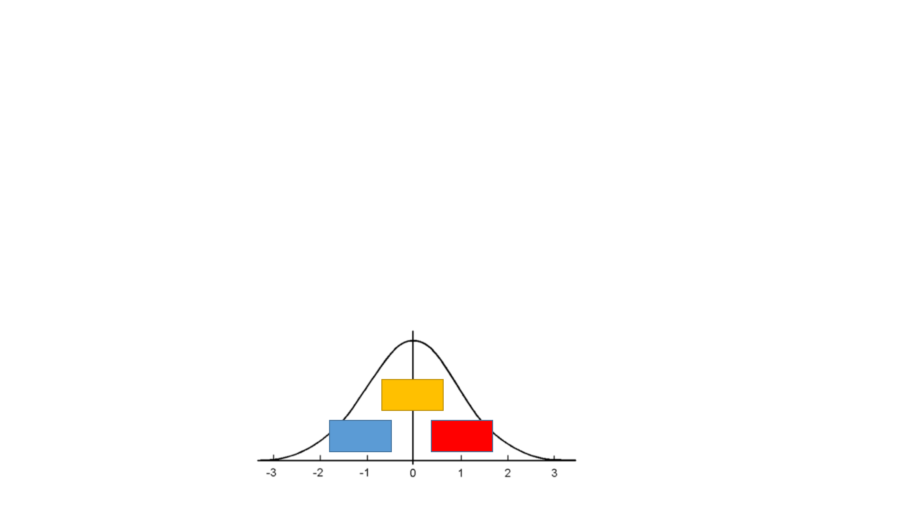
Defining stuff
• Z scores allow for presentation of standardized values, though
they may not be in the same unit (ie, inches of break, mph, %
change in speeds).
• Ex) an average peak fastball velocity is 91.72 mph +/- 3.39. A fastball
of 91.72 mph would have a z-score of 0, a 95.11 mph FB would have a
z-score of 1, and an FB of 88.34 mph would have a z-score of -1.
91.72
95.11 88.34
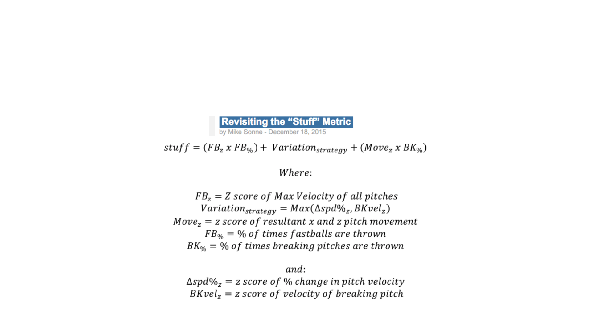
Defining Stuff
• Originally defined stuff in an article I wrote for FanGraphs
1
1
- http://www.fangraphs.com/community/revisiting-the-stuff-metric/
Defining Stuff - Example
• David Price – August 21, 2015 vs. LAA
• FBvel – 95.71 mph
• Curve – 78.33 mph
• 18.15% difference in velocity
• Break Distance – 21.17”
• Distance between highest rising fastball and
furthest dropping breaking pitch
• FB usage – 61.47%
• Breaking/Offspeed usage – 38.53%
• FBz = 0.81
• VarStrat (change in speed) = 0.58
• BreakDistancez = 0.42
• Stuff = 1.81
DATE
IP
H
R
ER
HR
BB
SO
GB
FB
Pit
Aug
21
8.0
6
2
2
1
1
9
9
12
109
Testing Stuff
• For the Tru-Media hackathon, I re-calculated stuff for each
pitcher, from both the provided database, and the PitchFx
database
• http://www.baseballheatmaps.com/pitch-fx-download/
• Previously, stuff was calculated from yearly averages for each
starting pitcher
• For this analysis, I calculated stuff on a game by game basis

Game by Game calculation
• A pitch had to be thrown 5 times in a game for it to be included
in the analysis
• Eephus pitches and screw-balls were not included
• Stuff was calculated for each pitcher, for every game they
appeared in
• Average stuff was then calculated over the course of the season
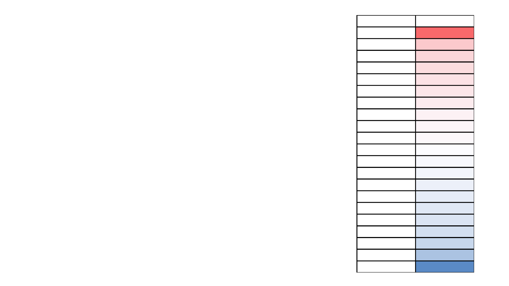
Stuff Averages
• The range of calculated stuff went from -
3.38 (R.A. Dickey) to 4.16 (Jake Arrieta).
• 50
th
percentile stuff was 0.44
• Example: Matt Shoemaker, Brandon Morrow
• To be included in further calculations
• Stuff was calculated for all games where a
pitcher threw a minimum of 75 pitches
Percentile Stuff
100% 4.16
95% 1.74
90% 1.42
85% 1.25
80% 1.11
75% 1.00
70% 0.88
65% 0.73
60% 0.64
55% 0.55
50% 0.44
45% 0.34
40% 0.21
35% 0.06
30% -0.08
25% -0.22
20% -0.34
15% -0.51
10% -0.79
5% -1.46
0% -3.38
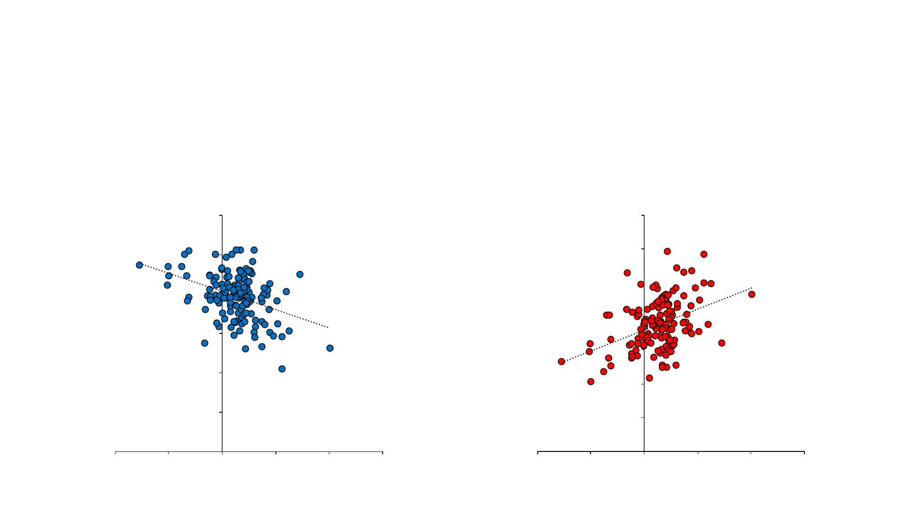
Stuff results
Stuff with xFIP: r = -0.38 Stuff with k/9: r = 0.40
R² = 0.14
0
1
2
3
4
5
6
-4.00 -2.00 0.00 2.00 4.00 6.00
xFIP
Stuff
xFIP
R² = 0.16
0
2
4
6
8
10
12
14
-4.00 -2.00 0.00 2.00 4.00 6.00
K/9
Stuff
K/9
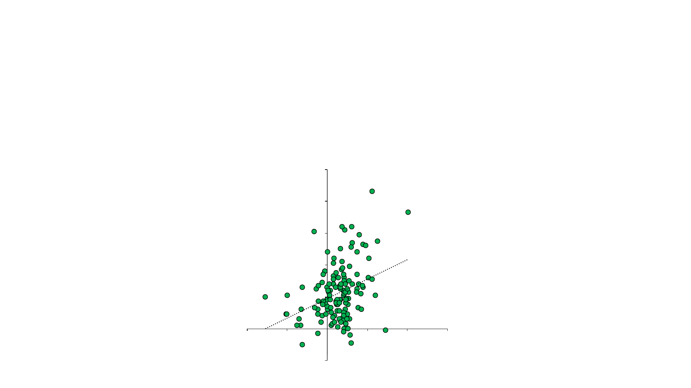
Stuff Results
Stuff with WAR: R = 0.35
R² = 0.12
-2
0
2
4
6
8
10
-4.00 -2.00 0.00 2.00 4.00 6.00
WAR
Stuff
WAR
Top ”Stuff” in 2015
Rank Name Stuff Peak Velocity Low Velocity Change in Vel (%) Break (") Breaking Vel (mph)
1 Jake Arrieta 4.04 94.44 80.59 0.15 25.28 90.10
2 Kyle Lohse 2.91 89.75 75.63 0.16 26.60 84.21
3 Corey Kluber 2.53 92.83 82.72 0.11 19.52 88.64
4 Jimmy Nelson 2.41 93.35 82.86 0.11 23.51 86.61
5 Noah Syndergaard 2.26 97.10 81.52 0.16 20.85 82.76
6 Clayton Kershaw 2.24 93.61 73.56 0.21 25.06 88.08
7 Matt Harvey 2.09 95.78 83.80 0.13 19.37 89.15
8 Nathan Eovaldi 2.06 96.60 75.79 0.22 17.15 84.30
9 Jacob deGrom 1.93 95.12 82.28 0.13 19.08 89.16
10 Christopher Archer 1.81 95.18 86.30 0.09 18.75 87.80
11 Edinson Volquez 1.80 94.03 80.65 0.14 23.11 80.65
12 Yordano Ventura 1.76 96.61 84.11 0.13 22.24 84.11
13 Joe Kelly 1.72 95.62 80.20 0.16 21.75 84.90
14 Zack Greinke 1.61 92.00 74.06 0.20 23.72 86.96
15 Justin Verlander 1.59 93.15 79.43 0.15 23.96 85.76
16 Chris Heston 1.56 89.51 75.03 0.17 18.74 75.47
17 Carlos Martinez 1.51 95.79 85.06 0.11 19.50 85.09
18 Garrett Richards 1.51 95.68 82.87 0.13 15.20 87.24
19 Carlos Carrasco 1.49 94.78 84.28 0.11 17.00 87.76
20 Michael Wacha 1.47 94.17 76.15 0.19 23.71 75.79
21 Felix Hernandez 1.27 92.25 80.07 0.13 20.50 82.95
22 Gerrit Cole 1.25 95.57 82.31 0.14 12.41 87.12
23 Max Scherzer 1.23 94.06 80.45 0.14 19.39 86.11
24 Madison Bumgarner 1.22 92.16 76.30 0.17 20.17 86.31
25 Jeremy Guthrie 1.21 91.76 77.35 0.16 21.62 81.60
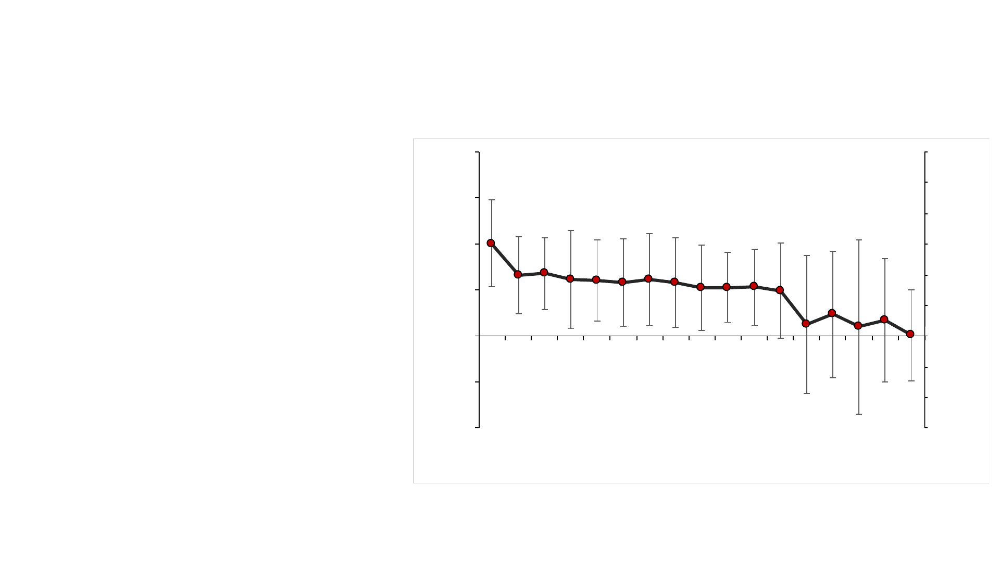
Further Utility – Stuff and Age
• Calculated from
FanGraphs yearly data
• Stuff gradually
diminishes with age,
with a sharp drop-off
after age 32
0
20
40
60
80
100
120
140
160
180
-1.0
-0.5
0.0
0.5
1.0
1.5
2.0
21 22 23 24 25 26 27 28 29 30 31 32 33 34 35 36 37
Count of Pitchers
Stuff (arb. units)
Age
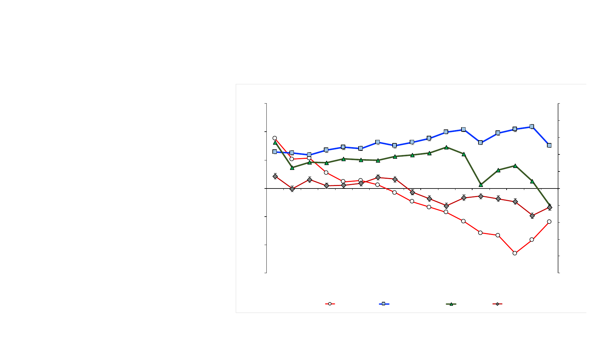
Stuff and Age
• Velocity declines with age
– as expected (for both
fastball and breaking ball
velocity)
• % change in velocity
actually increases with
age, as does movement.
However, after 32 – these
effects drop off sharply.
0.0
0.2
0.4
0.6
0.8
1.0
1.2
1.4
1.6
1.8
2.0
-0.6
-0.4
-0.2
0.0
0.2
0.4
0.6
21 22 23 24 25 26 27 28 29 30 31 32 33 34 35 36 37
Mean Pitching Strategy (1 - Fast Breaking Ball, 2 - Offspeed)
Stuff Contributor (z-score)
Age (Years)
Stuff and Aging
Pitching Strategy Peak Velocity Change in Velocity Movement Breaking Pitch Velocity

Stuff and Injury – Case Studies
• Injury to the arm can lead to diminished velocity, control, and
movement on pitches
• How does “stuff” change with respect to injury?
• Case studies will be presented to examine the lead up to injury,
as well as recovery from injury
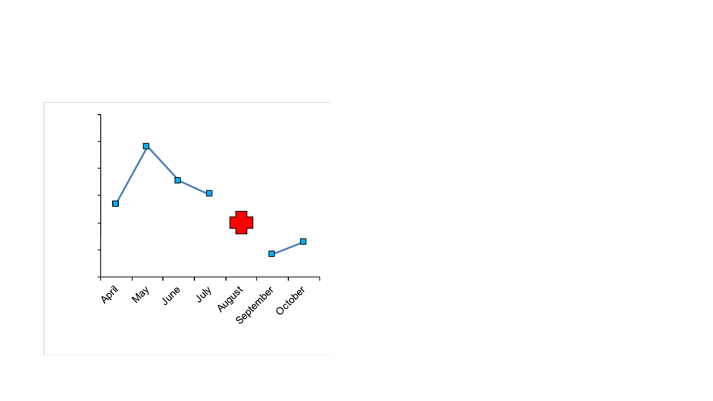
Stuff and Injury – AJ Burnett
• AJ Burnett had a flexor strain
injury at the end of July. After
sitting out the month of
August, he returned in
September and October.
• Burnett wasn’t the same in
those months, with his stuff
dropping by nearly 70%
between July and September
0.00
0.10
0.20
0.30
0.40
0.50
0.60
Stuff
Date
AJ Burnett
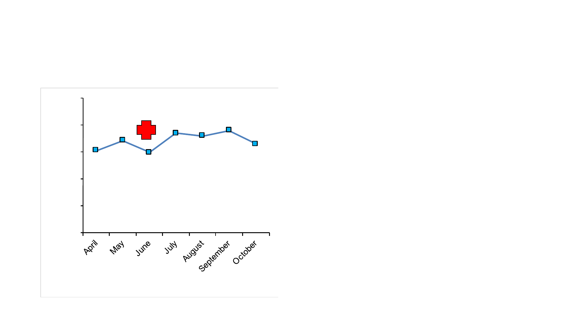
Stuff and Injury – Yordano Ventura
• Ventura had an elbow in jury in
June, resulting in the lowest
stuff he recorded all year. After
returning to the line up, his stuff
came back to it’s normal, high
level.
• This return to form allowed
Ventura to continue to pitch at
his normal ability throughout
the rest of the season.
0
0.5
1
1.5
2
2.5
Stuff
Date
Yordano Ventura
Stuff and Injury – Justin Verlander
• Verlander returned in June from a Triceps
injury, before eventually having one of his
better seasons in recent years
• At the start of the year, his stuff was below
his average – however, by the end of the
season, his stuff was over 2.0 – nearly
25% higher than his June starts
0
0.5
1
1.5
2
2.5
Stuff
Date
Justin Verlander
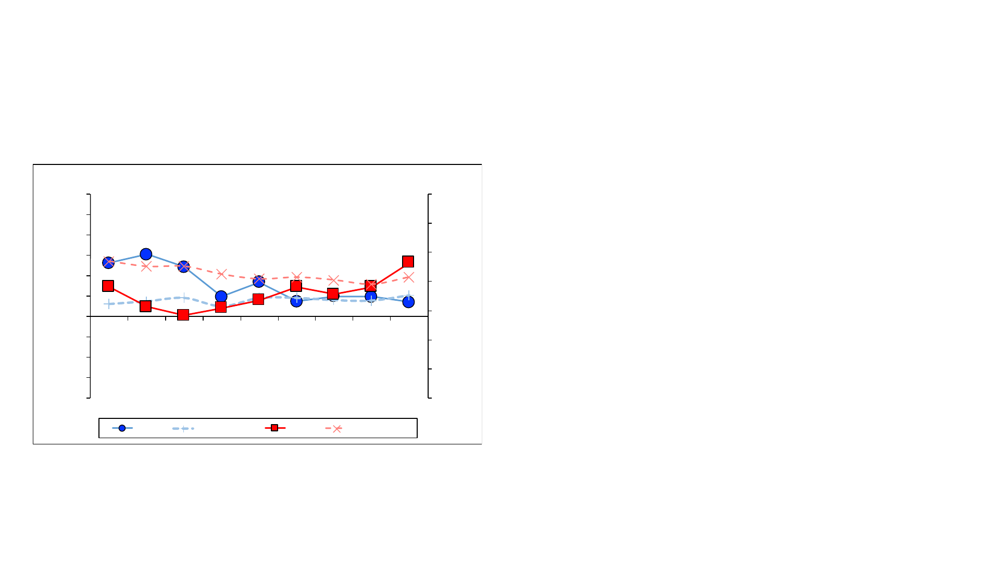
Stuff and Injury – Tim Lincecum
• Lincecum had exceptionally high
“stuff” in his Cy Young years, but his
stuff fell off in 2012 – around the time
when hip injuries took their toll on
him.
• In recent years, his stuff has been
around league average, or worse,
and his xFIP has risen in a similar
fashion.
0.0
1.0
2.0
3.0
4.0
5.0
6.0
7.0
-2.0
-1.5
-1.0
-0.5
0.0
0.5
1.0
1.5
2.0
2.5
3.0
2007 2008 2009 2010 2011 2012 2013 2014 2015
xFIP
Stuff
Year
Tim Lincecum
Stuff Med(stuff) xFIP Med(xFIP)

Stuff – A summary
• Stuff is a measure of the interaction between velocity, change in
velocity, break distance and speed of breaking pitches
• It has a significant relationship with K/9, WAR, and xFIP
• There is utility in using the stuff metric to evaluate player’s
returns from injury, or determining how a player may age
• It also has potential in identifying break-out players who my be
on the verge of stardom if control/durability issues are fixed
See how stuff has changed
• Select from the dropdown to see how stuff has changed in
players since 2007
• https://docs.google.com/spreadsheets/d/1PU3u3sJpr_jv70VAJIlyXnvO
h4pq56l7eXuo70Py81Y/edit#gid=2140502771
• (Calculated from yearly averages from FanGraphs data)
• See how stuff was calculated on a game-by-game basis in 2015
• https://drive.google.com/a/leadergonomics.com/file/d/0B2B5-
XR_3Jvcamw0aVY0U1d6czA/view?usp=sharing
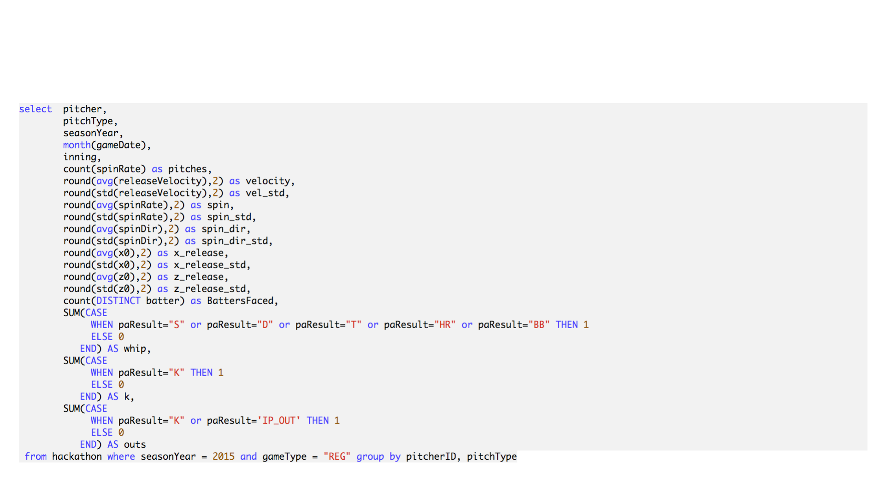
MySQL Queries - from PitchFX